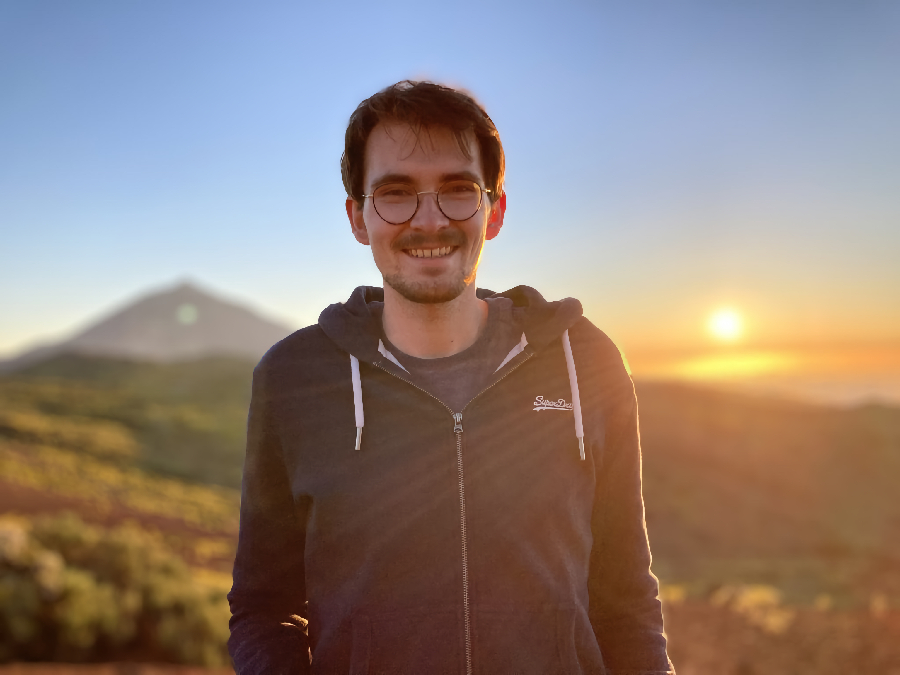

I’m at the final touches of my Ph.D. in the group of Berend Smit at EPFL focussed on the digititzation of chemistry: I’m using computational tools and machine learning to capture the tacit dimension of chemistry. I’m also a contributor to the cheminfo electronic lab notebook (ELN) ecosystem and other open source projects (see my GitHub).
💼 Get In Touch
Email me, or DM me on  or
or  if you’d like to chat!
if you’d like to chat!
If you need a short bio, you can find one here.